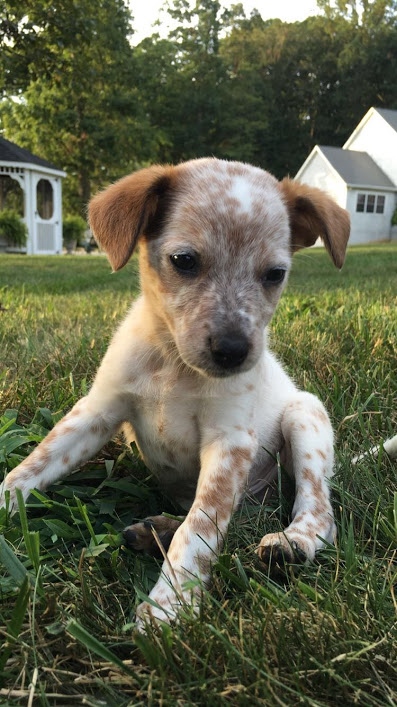
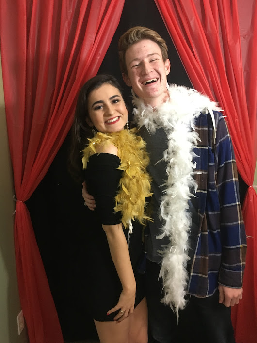
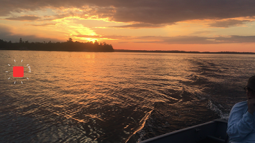

Ronan, an unusual name, is the name of my
newest and favorite puppy. We got him in September of 2016 and he is the best cuddler
around! He is a bit bigger now, probably around 20 or 30 pounds but he still cuddles
like he weighs five pounds. But I love this picture of him!

This is my best friend Brendan when we were at my party for my 18th
birthday. He is the best person and helps me with so much and is my first choice on
someone to spend time with.

Minnesota is probably the most beautiful place I have ever seen. It
is the one place I have been in my life SO FAR that has truly taken my breath away when
I saw it. This picture does not do it justice especially because I took this as a
screenshot when I was in the middle of a time lapse just because I needed a still
picture of how beautiful it was. Top